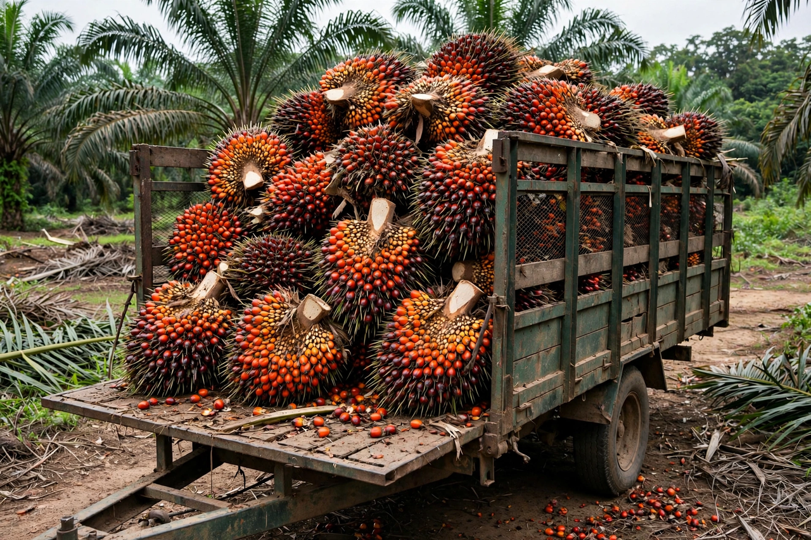

Oil palm
From Wikipedia, the free encyclopedia

The oil palms are palms of the genus Elaeis — chiefly the African oil palm (Elaeis guineensis) — cultivated for their fruit, from which Palm oil and palm kernel oil are extracted. The world's most productive oil crop (several times the yield per hectare of any rival), grown overwhelmingly in Indonesia and Malaysia (together about 85% of world output), it is also among the most controversial: its expansion drives deforestation, peatland carbon release and biodiversity loss in the tropics.
Cultivation
The palm fruits year-round from age 3–4 for 25+ years; fresh fruit bunches are milled within a day, the mesocarp yielding crude palm oil (food, oleochemicals, biodiesel) and the kernel a lauric oil. Smallholders farm roughly 40% of Southeast Asian area amid estates of the big groups (Sime Darby, Wilmar, Golden Agri).
Controversy and response
Orangutan habitat loss made palm oil the emblematic boycott target; the industry replies with yields (boycotting palm raises land demand for other oils) and certification (RSPO, since 2004; national ISPO/MSPO schemes), while the EU's deforestation regulation (2023) imposes traceability that producer nations contest as green protectionism. Breeding (tenera hybrids) and yield intensification are the technocratic path between ban and bulldozer.